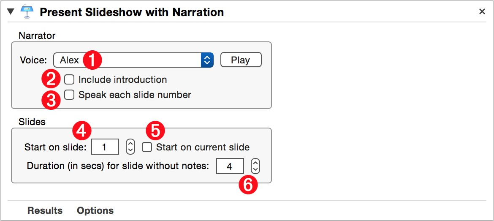
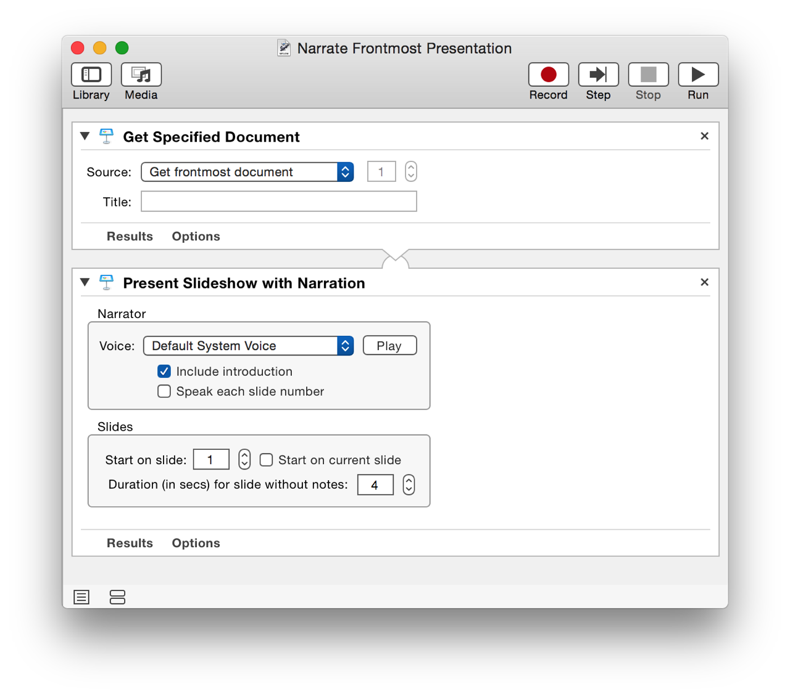
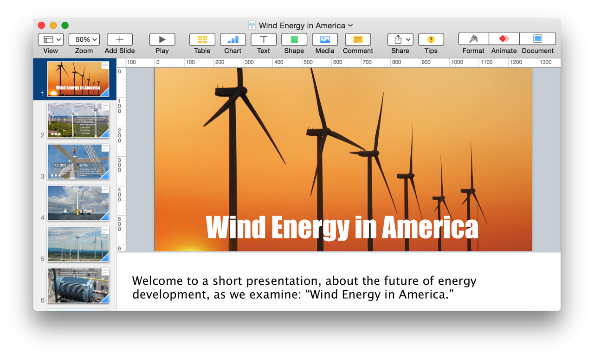

Have you ever wished you could preview your presentation by having someone else deliver it while you observed? Well, the “Present Slideshow with Narration” Automator action will put you in the audience by automatically delivering an open Keynote presentation using one of the built-in system voices to narrate the slide presenter notes and perform object builds and slide advances.
The Action Information
| Input: | An AppleScript reference to the open Keynote document to be presented. |
| Output: | An AppleScript reference to the presenting document |
| Parameters: | User-settable parameters include:
|
| Note: | To automatically execute builds, place the tag [[adv]] in the presenter notes, where you want the advance to occur. To have a build occur without waiting for the spoken text to finish, place the tag [[adv*]] in the presenter notes where you want the advance to occur. Also, if you wish to have the narrator introduce him or herself, and speak the number of each slide before narrating, select the “Include introduction” and “Speak each slide number” checkboxes. |
| Important: | To enable this action to control the presentation process, automatic advancing between slides must be disabled. |
| Related: | Other actions that may precede this action:
|
The Action Interface

1 System Voice - From this popup menu, select from the voice to use as the narrator. NOTE: Watch this short video on how to upgrade|install free high-quality voices from Apple.
2 Narrator Introduction - Select this option to have the “narrator” introduce his/herself before beginning the presentation. For example: “Hello, my name is Samantha, and I’ll be delivering this presentation.”
3 Announce Slides - Select this option to have the narrator announce each slide. For example: “Slide twelve.”
4 Starting Slide Index - Use the stepper control to select the index of the starting slide.
5 Current Slide - Select this checkbox to begin the presentation from the currently selected slide.
6 Default Display Duration - Select the number of seconds that slides without presenter notes should be displayed during the presentation.
Here’s a simple workflow that will begin to narrate the frontmost presentation in Keynote. The provided installer below includes an example presentation containing presenter notes with advance codes.

DOWNLOAD an example narrator-ready presentation and related workflow installer (29-MB). The installer will activate the system-wide Script Menu and add the workflow to the menu.
TIP: To open the installed workflow in Automator for editing, hold down the Option key and select the workflow title from the Script Menu. To reveal the workflow, hold down the Shift key and select the workflow title from the Script Menu.
